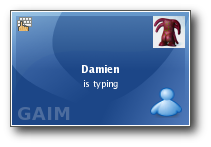
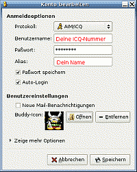
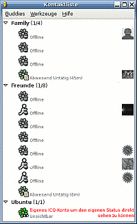
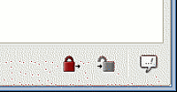
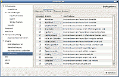

Gaim
Archivierte Anleitung
Dieser Artikel wurde archiviert, da er - oder Teile daraus - nur noch unter einer älteren Ubuntu-Version nutzbar ist. Diese Anleitung wird vom Wiki-Team weder auf Richtigkeit überprüft noch anderweitig gepflegt. Zusätzlich wurde der Artikel für weitere Änderungen gesperrt.
Zum Verständnis dieses Artikels sind folgende Seiten hilfreich:
Gaim (jetzt: Pidgin) ist ein Instant Messenger, der es erlaubt, dasselbe Programm für verschiedene Dienste bzw. Protokolle zu nutzen. Neben den offiziellen Plugins für die gibt es noch weitere Plugins, die von anderen Entwicklern oder Projekten bereit gestellt werden, um Gaim zu Netzwerken kompatibel zu machen oder um weitere Funktionen zu erweitern. Zur Zeit gibt es Plugins für unter anderem folgende Protokolle:
AOL Instant Messenger (AIM)
Gadu-Gadu
ICQ
Internet Relay Chat (IRC)
Lotus Sametime (mit extra Plugin)
MSN Messenger (ohne MSN Messenger 7.0)
Novell Groupwise
OpenNap (Napster)
SILC
Xfire (mit extra Plugin)
Yahoo! Messenger (YIM)
Zephyr
SIMPLE
Installation¶
Zur Installation [1] ist folgendes Paket notwendig:
gaim
Neuste Version¶
Die erste Beta-Version von Gaim 2.0 ist am 16.12.2005 erschienen. Infos hierzu in diesem Thread  . Gaim steht derzeit unter starker Weiterentwicklung für Gaim 2.x. Bis diese neue Version veröffentlicht wird, wird es voraussichtlich keine Minor Releases mehr geben.
. Gaim steht derzeit unter starker Weiterentwicklung für Gaim 2.x. Bis diese neue Version veröffentlicht wird, wird es voraussichtlich keine Minor Releases mehr geben.
Hinweis!
Zusätzliche Fremdquellen können das System gefährden.
Wenn man die neuste Gaim2-Version mit der Paketverwaltung installieren möchte, muss eine zusätzliche Paketquelle hinzugefügt werden [2].
Edgy Eft 6.10:
deb http://repository.debuntu.org/ edgy multiverse
Dapper Drake 6.06 LTS:
deb http://repository.debuntu.org/ dapper multiverse
Die Pakete dieser Quelle sind mit einem GPG-Schlüssel signiert. Damit dieser überprüft werden kann, muss der Schlüssel mit dem Befehl
wget http://repository.debuntu.org/GPG-Key-chantra.txt sudo apt-key add GPG-Key-chantra.txt
hinzugefügt werden [3]. Danach kann man das Paket
gaim
wie gewohnt installieren [1].

Einrichten¶
Nach erfolgreicher Installation findet man Gaim im GNOME-Menü unter "Anwendungen -> Internet". Optional: Um nicht lange zu suchen, empfiehlt es sich auf dem GNOME-Panel eine Verknüpfung hinzuzufügen: Rechtsklick -> "Zum Panel hinzufügen... -> Anwendungsstarter -> (kleines Dreieck neben) Internet -> Gaim".
Nach dem Start von Gaim erscheinen drei Programmfenster: "Anmelden", "Konten" (noch leer) und "Konto hinzufügen".
Konto hinzufügen¶
Um ein (bei AIM, MSN, ICQ etc.) bestehendes Konto hinzuzufügen (Ansonsten s. Links unten auf der Seite unter "Anmelden"): 
Protokoll auswählen (Aim-ICQ, Gadu-Gadu, Groupwise, IRC, Jabber, MSN, Napster, Yahoo)
Benutzernamen (z.B. ICQ-Nummer), Passwort und Alias eingeben.
[X] Häkchen setzen, falls die Optionen "Passwort speichern" und "Autologin" gewünscht sind.
Speichern
Nun findet man das soeben eingerichtete Konto bei "Anmelden" und "Konten" wieder. Der Punkt "Konten" kann geschlossen werden. Um sich einzuloggen nur noch auf "Anmeldung" klicken und schon wird man verbunden.
Als ein neues Fenster öffnet sich die Kontaktliste. Sofern man einen neuen Zugang hat, bleibt die Liste erst einmal leer, denn hier werden (vorerst) nur die Buddies angezeigt, die online sind.
IRC¶
Einen Internet Relay Chat-Zugang einzurichten ist relativ einfach.
Hierzu das Programm starten und unter "Werkzeuge -> Konten -> Hinzufügen" startet folgende Maske:
Protokoll "IRC" wählen.
Benutzernamen (z.B. Foren-Spitzname), Passwort und Alias eingeben.
Häkchen setzen bei den Optionen "Passwort speichern" und "Autologin".
Speichern.
web.de¶
Um sich mit dem Jabber-Zugang von web.de zu verbinden reichen folgende Schritte:
Unter "Werkzeuge -> Konten -> Hinzufügen" das Protokoll "XMPP" wählen
Benutzername- web.de NutzernameDomain: web.de
Passwort: ****
Passwort speichern: an/abwählen
Buddyicon auswählen durch anwählen von "Dieses Buddy-Icon für dieses Konto benutzen:" und
Zugang "Speichern"
Zum Einloggen nur noch auf "Anmeldung" klicken und schon wird man verbunden. Nach erfolgreichem Login beginnt das Gaim-Icon zu blinken. Ein Klick darauf und ein neues Fenster öffnet sich. (weitere Informationen)
Buddies hinzufügen¶
Sofern man jemanden kennt, der z.B. einen ICQ-Account hat, so kann man diesen wie folgt hinzufügen: "Buddies -> Buddy hinzufügen..."
Nun die bekannten Daten eingeben.
Hinweis:
Es empfiehlt sich zu den bereits bestehenden den eigenen Account hinzuzufügen. So hat man immer die Kontrolle, welchen Status (Unsichtbar, Abwesend, Untätig,...) man hat!
Einstellungen¶
Einige sinnvolle Erweiterungen, die aktiviert werden sollten.
Offline Buddies anzeigen¶
 Normalerweise werden die offline Buddies ausgeblendet. Wem dies nicht gefällt, braucht nur auf "Buddies -> Zeige offline Buddies" zu klicken, und es werden auch diese angezeigt.
Autologin¶
Falls Autologin eingangs nicht aktiviert wurde, kann das immer noch nachgeholt werden: Gaim starten -> Startbildschirm erscheint -> "Konten -> Konten -> Autologin".
Automatisch neu verbinden¶
Dazu muss man nur das Plugin "Automatisch neu verbinden" aktivieren und in den Optionen richtig konfigurieren: Dazu alle Häkchen im Pluginmenü für "Automatisch neu verbinden" aktivieren.
Sound (de-)aktivieren¶
In manchen Situationen ist es angenehmer den Sound zu deaktivieren. Dies kann man hier vornehmen: "Werkzeuge -> Einstellungen -> Sounds" und die Kästchen (de-)aktivieren. Dies ist besonders empfehlenswert, wenn man z.B. neben dem Chatten noch etwas macht, was die Soundkarte blockiert. Schließt man dieses Programm, spielt Ubuntu alle bis dahin eingegangenen Meldungen ab! Alternativ den Sound ausstellen.
Kleineres Chat-Fenster¶
Ein kleines, feines Chat-Fenster lässt sich mit diesen Klicks bewerkstelligen:
"Werkzeuge -> Einstellungen -> Unterhaltungen"
Hier "Buttons zeigen als -> Kein" aktivieren
Haken weg bei "Zeige Werkzeugleiste Formatierung"
Haken weg bei "Buddy-Icons anzeigen"
Kompakteres Kontaktlistenfenster¶
"Werkzeuge -> Einstellungen -> Kontaktliste -> Buttons zeigen als -> Kein" aktivieren.
Gesprächsmitschnitt¶
Um die Gespräche mit den unterschiedlichen Chatpartnern ggf. nochmals nachlesen zu können, empfiehlt es sich bei "Werkzeuge -> Einstellungen -> Mitschnitt" als Format "einfacher Text" zu wählen und beim "Nachrichtenmitschnitt" beide Häkchen zu setzen. Nun wird im Heimverzeichnis ein Ordner /home/BENUTZERNAME/.gaim/logs erstellt. Hier findet man alle Protokolle fein säuberlich sortiert nach folgenden Kriterien: "Protokoll", "benutztes Konto" und "Gesprächspartner".
Diese kann man, wenn man mag, zu gegebenen Zeitpunkten auch manuell löschen.
Privatsphäre¶
Einstellungen an der Privatsphäre vorzunehmen ist einfach: "Werkzeuge -> Privatsphäre -> gewünschtes Konto auswählen" Abschließend festlegen, ob nur die Benutzer aus der eigenen Kontaktliste einem eine Nachricht senden dürfen oder eine der anderen Optionen wählen. Diese brauchen nicht erläutert zu werden, da sie selbsterklärend sind.
Verschlüsselung¶
Diese Erweiterung ist uneingeschränkt empfehlenswert. Sie nutzt RSA Verschlüsselung unter Benutzung der Mozilla NSS Verschlüsselungsbibliothek. Um sie zu aktivieren "Werkzeuge -> Einstellungen -> PlugIns -> Gaim-Encryption". Beim Setzen des Häkchens werden automatisch ein öffentlicher und ein privater Schlüssel generiert. Der öffentliche Schlüssel wird später automatisch an die Gesprächspartner übermittelt. Nun findet die Kommunikation mit 512 bis 4096 Bit Verschlüsselung statt!
Weitere Einstellungen können im neuen Menüpunkt "Gaim-Encryption" durch Aktivierung der jeweiligen Optionen vorgenommen werden.
Im Gesprächsfenster kann man nun rechts unten durch (De-)Aktivieren des Schloss-Symbols im (un-)sicheren Modus mit den eigenen Kontakten chatten.
Ein kleiner Installationsschritt - aber ein großer Schritt für sichere Kommunikation!
Eine Kryptografie-Erweiterung, die noch weiter in Richtung Privatsphäre geht, wird im Artikel Off-the-Record Messaging beschrieben.
Anonymität¶
Um mit Gaim anonym zu chatten, muss man auf das jeweilige Konto gehen und dort auf "Konto bearbeiten -> Erweitert -> Proxy-Optionen". Hier kann man jetzt einen anonymen Proxy eintragen. Um zum Beispiel Tor zu benutzen, wählt man SOCKS 5 als "Proxy-typ" aus und dann localhost als "Host" und als "Port" den Port an welchem Tor lauscht (per default 9050).
Zusatzmodul Guifications¶
Guifications ist ein Gaim-Modul, das kleine Fenster in einer benutzerdefinierten Ecke des Bildschirms zeigt, die verschiedene Informationen über Gaim anzeigen. Zum Beispiel, wenn man angeschrieben wird, wenn sich jemand einloggt und vieles mehr. Das Plugin lässt sich sehr vielfältig konfigurieren und unterstützt auch verschiedene Themes. Es muss nur durch einen Haken bei "Werkzeuge -> Einstellungen -> PlugIns -> Guification" aktiviert werden.
Konfiguration¶
Durch die Aktivierung des Plugins entsteht ein neuer Punkt unter "Plugins" für die Guifications. 
Hier lässt sich Guifications konfigurieren:
"Allgemein" - Sollte selbsterklärend sein.
"Meldungen" - Was soll alles gemeldet werden?
"Themen" - Mit "weitere" können noch weitere Themen heruntergeladen werden. Die tar.gz-Archive müssen einfach mit Drag&Drop in die Liste gezogen werden. zip-Dateien müssen direkt in den Ordner /home/BENUTZENAME/.gaim/guifications/themes entpackt werden. Vorher sollte man ggf. einen Ordner für das jeweilige Thema erstellen. Manche Themen lassen sich auch noch weiter konfigurieren. So kann eingestellt werden, ob Buddy-Icons angezeigt werden sollen, und wie die Meldungen angeordnet sein sollen!
"Erweitert" - ...
Die Kontaktliste lässt noch weitere Konfigurationsmöglichkeiten zu. So kann jedem Kontakt ein eigenes Thema zugewiesen werden. Unwichtige Kontakte können so das Thema "Keins" bekommen und stören nicht. Das ganze lässt sich auch auf Benutzergruppen anwenden. So kann es sinnvoll sein, eine Gruppe für Kontakte, mit denen man öfters chattet, und eine für die, mit denen man seltener redet einzurichten.
Weitere Plugins¶
Neben den Protokoll-Plugins kann Gaim auch mit Plugins ausgestattet werden, welche den Funktionsumfang erweitern. Dies reicht von erweiterten Möglichkeiten der Benachrichtigung bei An- und Abmelden eingetragener Nutzer bis hin zu Plugins, die erweiterte kryptografische Funktionen bieten wie im Artikel Off-the-Record Messaging beschrieben. Zur Zeit gibt es neben den offiziellen Protokoll-Plugins insgesamt mehr als 30 weitere Plugins für Gaim.
Chatroom¶
Um mit vielen Menschen über das ein oder andere Thema zu sprechen, kann man Chatrooms aufsuchen. In Gaim geht man wie folgt vor: "Werkzeuge -> Raumliste -> Liste abrufen -> Raum auswählen und Betreten".
Hinweis:
Dies funktioniert nur bei Zugängen von: Y!M, Jabber und IRC.
Gaim aufpeppen¶
Startscreen ändern¶
Um den Startscreen den individuellen Bedürfnissen anzupassen, benötigt man ein PNG-Bild mit folgenden Maßen: Breite: 210 px. Höhe: 150 px.
Man kann im Internet passende Bilder herunterladen - oder diese Beispielbilder nutzen, die hier  zu finden sind. Das gewünschte Bild herunterladen und umbenennen in logo.png. Man kann auch jedes andere Bild in GIMP laden und auf die richtigen Maße bringen als Name logo.png wählen. Nun ist der eigene Screen fertig!
zu finden sind. Das gewünschte Bild herunterladen und umbenennen in logo.png. Man kann auch jedes andere Bild in GIMP laden und auf die richtigen Maße bringen als Name logo.png wählen. Nun ist der eigene Screen fertig!
Danach öffnet man im Terminal [3] den Ordner, in dem sich das Logo befindet, und kopiert es in den Ordner von Gaim:
sudo cp /usr/share/pixmaps/gaim/logo.png /usr/share/pixmaps/gaim/logo.png_old #Sicherheitskopie des alten Logos anlegen sudo cp logo.png /usr/share/pixmaps/gaim/ #kopiert das neue Logo
Icon ändern¶
Um die Icons von Gaim zu ändern, einfach auf Gnome-look.org nach "Gaim" suchen. Nun findet man einige "Icon-Themes". Ein Theme öffnen, abspeichern und den auf der Seite angegebenen Installationsanweisungen folgen. Es empfiehlt sich vorher eine Sicherheitskopie der jeweiligen Ordner zu machen, um eventuell die Änderungen rückgängig machen zu können. Alle Bilder befinden sich im Ordner /usr/share/pixmaps/gaim/ bzw. in einem der Unterordner.
Smiley Themes installieren¶
Um das Theme zu ändern: "Werkzeuge -> Einstellungen -> Smiley-Themen" und dort nach einem passenden suchen. Falls diese nicht gefallen, können hier geeignete heruntergeladen werden. Die Installation ist simpel: einfach in die Themenauswahl ziehen oder in das Verzeichnis /home/BENUTZERNAME/.gaim/smileys entpacken, um es dann im Themenordner vorzufinden!
Buddy Icon¶
Buddy Icons sind kleine Bilder, ähnlich wie die Avatare im Forum. Um diese zu verwenden, wählt man "Kontaktliste -> Werkzeuge -> Konten". Dort das Konto auswählen. Dann auf "Bearbeiten -> Benutzereinstellungen -> Öffnen" klicken und das Bild auswählen... Dieses sollte jedoch nicht größer als 4kb sein und als .gif, .jpg oder .bmp vorliegen.
Tastenkürzel¶
| nützliche Tastenkürzel in der Kontaktliste | |
| Strg + B | Buddies hinzufügen |
| Strg + A | Konten verwalten |
| Strg + P | Einstellungen |
| Strg + D | Abmelden |
| Strg + Q | Programm beenden |
| nützliche Tastenkürzel im Chatfenster | |
| Strg + ⏎ | Nachricht senden |
| ⇧ + ⏎ | Zeilenumbruch einfügen |
| Strg + ↑ | letzte gesendete Nachricht |
| Strg + 1 | Smiley einfügen (Tasten 1 - 8) |
| Strg + B | Fettschrift |
| Strg + I | Kursivschrift |
| Strg + U | unterstrichenes Schriftbild |
| Alt + 1 | Tab wechseln (bei mehreren Chats - Tasten 1 - 9) |
| Strg + Z | Fenster minimieren |

- Erstellt mit Inyoka
-
 2004 – 2017 ubuntuusers.de • Einige Rechte vorbehalten
2004 – 2017 ubuntuusers.de • Einige Rechte vorbehalten
Lizenz • Kontakt • Datenschutz • Impressum • Serverstatus -
Serverhousing gespendet von